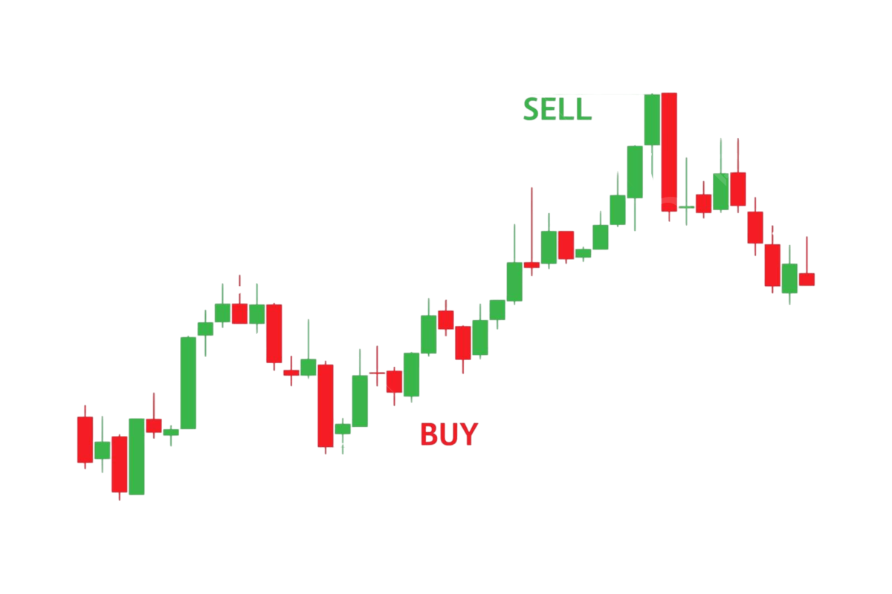

Análisis de mercados financieros
Soy muy apasionado por el análisis de mercados financieros, tengo
experiencia en índices como Nasdaq, Dow Jones, Activos financieros
como XAUUSD, Divisas. Me encanta investigar tendencias y tomar
decisiones basadas en datos. Llevo más de 5 años en el mercado y
tengo mi propia estrategia avalada y testeada por aproximadamente
1.000 operaciones.
Gestor de capital
Mi enfoque se basa en cuidar las métricas, respetar las
matemáticas y conocer a fondo los datos de mi estrategia. Rigor,
profesionalismo y disciplina, siempre dentro de mi plan de
inversión.
Lectura
Disfruto leer libros de crecimiento personal y espiritual que me
aportan nuevas perspectivas y me invitan a la reflexión. Este
hábito me permite cultivar la calma, la empatía y la claridad
mental, además de mantenerme en un proceso constante de
aprendizaje. Lo considero una parte esencial de mi desarrollo
integral.